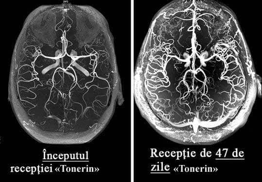
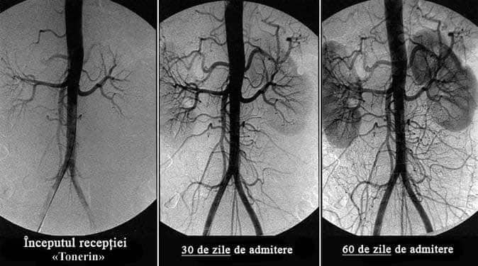
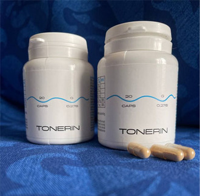
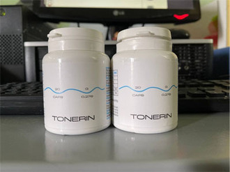

Ce să faci dacă te doare capul, ai zgomot în urechi și îți
amorțesc membrele?
Semne de distonie a vaselor cerebrale
Viorel Lucescu
Distonia vaselor cerebrale este o afecțiune
patologică în care tonusul vaselor și circulația normală a sângelui în țesuturile creierului sunt
perturbate. În acest articol, puteți citi despre cauzele, mecanismele și simptomele acesteia la
apariția cărora este timpul să bateți alarma. Precum și despre complicațiile severe ale acestei boli
insidioase și despre abordarea modernă a tratamentului disponibil tuturor.
Distonia vaselor cerebrale afectează performanța întregului
organism. Din cauza alimentării insuficiente cu sânge a creierului, scade performanța generală,
apare slăbiciune, iar sistemele importante ale corpului încep să funcționeze defectuos.
Simptomele inițiale ale distoniei vaselor cerebrale
sunt:
Dureri de cap;
Zgomot în urechi;
Slăbiciune generală, apatie, somnolență;
Capacitate redusă de muncă;
Tulburări de somn, insomnie;
Dereglări de memorie;
Senzație de amorțeală la nivelul membrelor;
Edeme ale mâinilor și picioarelor;
Senzație de întuneric în fața ochilor;
Scăderea vederii;
D ereglări hormonale în organism.
Distonia vaselor cerebrale este primul semn al
„înfundării” totale a vaselor organismului cu colesterol, afecțiune numită ateroscleroză. Vasele
creierului sunt cele mai delicate și subțiri, astfel încât acestea suferă în primul
rând.
În baza tratamentului circulației sanguine a vaselor
cerebrale se află curățarea vaselor întregului organism de reziduurile acumulate. Plăci de
colesterol, trombi și săruri de calciu.
Cu ce pot fi curățate vasele de sânge acasă?
Restabilirea circulației sanguine și curățarea vaselor de
sânge este un proces complex. Aceasta implică toate vasele corpului și îmbunătățește de multe ori
calitatea vieții.
Aflați cum să vă curățați vasele de sânge, cum să
scăpați de sute de boli „cronice” și cum să obțineți încă 20 de ani de viață sănătoasă din acest interviu detaliat.
Cât de periculoasă este distonia vaselor cerebrale?
Care sunt amenințările ignorării simptomelor?
De ce vasodilatatoarele prezintă pericol?
Care este legătura dintre vasele creierului, excesul de greutate, articulații și
potență?
Cum putem restabili circulația sângelui și întări vasele de sânge de sine
stătător?
La aceste întrebări ne-a răspuns șeful Catedrei
de chirurgie vasculară a creierului a Academiei de Științe Medicale din Romania ,
profesor, neurochirurg practician, medic emerit din România, dl
Nicolae Cupăreanu.
Profesor Nicolae Cupăreanu este
un om de știință român, medic neurolog, profesor de Neuropsihologie și Anatomie a Sistemului nervos,
membru de onoare al Academiei Române, membru al Academiei Oamenilor de Știință din România și al
Academiei de Științe Medicale din România. Este, de asemenea, Director de Onoare al Institutului de
Antropologie "Fr. I. Rainer" al Academiei Române și Președintele de Onoare al Societății Academice
de Antropologie.
Dl
Cupăreanu este considerat unul dintre cei mai buni neurochirurgi din lume. Este
autorul unor tehnici chirurgicale unice, care sunt utilizate în întreaga lume.
Dl
Cupăreanu este convins că speranța medie de viață în România poate fi mărită până la
89-93 ani, ca în țările dezvoltate. Dacă începem să explicăm pe larg cetățenilor importanța
curățării vaselor după 40 de ani.
Cât de periculoasă este distonia vaselor cerebrale?
- Dl
Cupăreanu, ce simptome ar trebui să ne atragă atenția în primul rând?
- În stadiul inițial, distonia vaselor cerebrale se manifestă
nepronunțat. Majoritatea nu acordă atenție simptomelor, iar simptomele în sine apar, apoi dispar.
Primele semne ale tulburării circulației
cerebrale:
Zgomotul din urechi care apare fără motiv
Musculițe în fața ochilor
Senzație de amorțeală a degetelor și a feței
Dureri de cap în regiunea frunții și tâmplelor
Salturi bruște ale tensiuni (se întunecă în fața ochilor la schimbarea bruscă a poziției
corpului)
Îngheață picioarele și mâinile
Odată cu deteriorarea vaselor de sânge, se dezvoltă unele
boli cronice permanente:
Hipertensiune arterială
Dureri articulare, musculare, crampe la nivelul membrelor
Tahicardie
Varice și tromboză venoasă
Slăbirea potenței, mărirea prostatei la bărbați
Încetinirea metabolismului și afectarea metabolismului grăsimilor
În pofida faptului că nu este o boală „acută”, deteriorarea
circulației sanguine a creierului este foarte insidioasă. În cele din urmă, mai devreme sau mai
târziu, aceasta duce la accident vascular cerebral, dar până atunci torturează omul, ucigând încet
funcțiile vitale ale organelor și provocând un întreg buchet de diferite boli.
Toate aceste boli sunt consecințe. Consecințe ale
aterosclerozei vasculare, depunerii pe pereții vaselor a plăcilor de colesterol și a trombilor. Spre
regret, doar persoane unice de la noi acordă atenție curățării vaselor, continuând să sufere ani de
zile și să bea pastile inutile pentru bolile lor cronice.
- Da, din păcate, oamenii noștri nu sunt informați
despre importanța curățării vaselor.
- Nu e vina lor. Despre ce putem vorbi când 99 din 100 de
medici români nu au auzit nimic despre nutraceutice și necesitatea utilizării lor pentru curățarea
vaselor de sânge.
În țările dezvoltate: SUA, Canada, Japonia, Elveția timp de
11 ani a fost legiferat să fie oferite nutraceutice o dată la 4 ani fiecărui cetățean după 40 de
ani. Pe alocuri gratuit, pe alocuri din contul asigurărilor medicale. Acest lucru este controlat de
stat.
Care sunt amenințările ignorării simptomelor?
– Ce se întâmplă dacă ignorați simptomele „înfundării”
vaselor și tratați numai bolile evidente?
Bolile vor progresa, în pofida oricărei terapii
medicamentoase. Da, ele pot fi „atenuate” cu pastile, puteți merge la chirurgi, dar cauza nu dispare
nicăieri.
Și cu cât mai multe reziduuri se acumulează în vase, cu atât
vor fi mai grave consecințele.
La înfundarea vaselor cerebrale de grad mediu sau
mediu-sever, apar următoarele patologii:
Cu un grad sever de contaminare a vaselor, cel mai adesea pot
avea loc accident vascular cerebral și paralizie totală sau parțială.
De ce vasodilatatoarele prezintă pericol?
- Este adevărat că vasodilatatoarele fac mai mult rău
decât bine?
— Da. Medicamentele vasodilatatoare sunt bune pentru
situațiile de urgență. Administrarea lor frecventă creează o sarcină uriașă asupra pereților
vaselor.
Sărmanele vase suferă foarte mult din cauza „straturilor”
acumulate de colesterol, care corodează pereții epiteliului, făcându-l mai subțire. Iar
vasodilatatoarele dilată vasele de sânge, creând o suprasolicitare a pereților. Dacă în acest moment
vasul nu rezistă și se rupe, atunci are loc un accident vascular cerebral.
Din acest motiv, vă sfătuiesc foarte atent să luați
medicamente vasodilatatoare și numai în cazuri excepționale.
Care este legătura dintre vasele creierului, excesul de greutate,
articulații și potență?
- De ce, în cazul dereglării circulației sanguine a
creierului, femeile adesea se îngrașă, bărbații pierd „puterea” și fac prostatită, iar articulațiile
și coloana vertebrală încep să se distrugă?
- Când vasele creierului sunt „înfundate” din cauza plăcilor,
atunci acesta primește mai puține substanțe nutritive. În fiecare an, după vârsta de 40 de ani,
creierul primește cu 5% mai puține substanțe nutritive.
Prin urmare, până la vârsta de 50 de ani, alimentarea
creierului se înrăutățește în jumătate.
- Au participat oare la studii persoanele cu
hipertensiune arterială?
- Nivelul dorit de colesterol total, care include
colesterolul LDL, colesterolul HDL și trigliceridele, este de la 140 până la 200 mg/dL (3,6 până la
5,2 mmol/L). Riscul de infarct miocardic crește mai mult de două ori, atunci când nivelul total de
colesterol se apropie de 300 mg/dl (7,8 mmol/l). Riscul se reduce atunci când nivelul colesterolului
LDL este sub 130 mg/dl (3,4 mmol/l), iar nivelul colesterolului HDL este peste 40 mg/dl (1 mmol/l).
În ceea ce privește lipoproteina (a), dacă nivelul acesteia este mai mare de 50 mg/ dl (100 nmol/l),
atunci riscul de a dezvolta boli cardiovasculare crește.
- Hipertensiunea arterială necontrolată este un factor de risc
pentru infarctul miocardic și accidentul vascular cerebral, cauzat de ateroscleroză. Riscul bolilor
cardiovasculare începe să crească odată cu creșterea tensiunii arteriale de peste 110/75 mm Hg.
Reducerea tensiunii arteriale duce în mod clar la o reducere a riscului. Specialiștii încearcă de
obicei să atingă o tensiune arterială de 140/90 mmHg. și mai mică, iar la persoanele cu risc de boli
cardiovasculare, de exemplu, care suferă de diabet zaharat sau boli de rinichi, adesea 130/80 mmHg.
și mai jos.
*Portal The Dystonia Coalition 2022
Ce face creierul atunci când nu primește suficiente
substanțe nutritive?
1. El crede că suntem înfometați și ne impune să
mâncăm.
Dar, indiferent cât de mult mâncați, vasele înfundate nu permit
livrarea cantităților suficiente de substanțe nutritive către creier. Dar acestea trebuie duse undeva.
Și corpul le pune la păstrare, apar depuneri de grăsime.
2. În modul „foame”, creierul crede că murim, prin urmare,
dezactivează funcțiile „inutile” pentru supraviețuirea organismului.
Funcția de reproducere nu este necesară pentru un creier
înfometat, astfel încât funcția de potență și libidoul scad. Scade producția hormonului masculin
testosteron. Aceasta, la rândul său, provoacă o creștere în dimensiuni a prostatei și dezvoltarea
prostatitei.
Funcția de recuperare este foarte consumatoare de energie și
creierul o „dezactivează” până la vremuri mai bune. Țesuturile articulațiilor nu mai regenerează:
cartilajul, oasele, scade producția de lichid sinovial (lubrificator articular). Apar dureri articulare,
osteocondroză, artrită.
Cum putem restabili circulația sângelui și întări vasele de sânge?
- Este oare posibil să curățăm vasele de sânge de sine
stătător și să restabilim circulația sângelui?
- Da. Acest lucru nu este dificil, dar necesită răbdare și
disciplină. Dar merită, și efortul va fi răsplătit.
Institutul de chirurgie vasculară și cardiologie a dezvoltat un
preparat unic - nutraceuticul „” . Specialiștii
Institutului au creat un produs care nu are astăzi analogi. este absolut sigur, nu are efecte
secundare și poate fi luat fără supravegherea unui medic.
curăță vasele de toate tipurile de
depozitări:
Plăci de colesterol
Trombi
Săruri de calciu
Rezultatele utilizării :

Timp de 1,5 luni de administrare a , circulația
sângelui se restabilește cu 99,71%
Este important că circulația sângelui se restabilește sistemic:
în toate vasele, arterele și capilarele.

Forma solubilă (picături) a este un „know-how”, mândria
oamenilor noștri de știință. Aceasta asigură aproape 100% de curățare a vaselor datorită fracțiunilor de
CO2 active ale extractelor care pătrund în plăcile de colesterol și le dizolvă din interior.
Prin curățarea vaselor de sânge, restabilește alimentația
normală a creierului. Începe o reacție în lanț de recuperare a organismului.
Cum acționează asupra organismului?
- acționează în 3 etape:
1. Elimină depunerile din vasele de sânge Dizolvă
plăcile aterosclerotice, cheagurile de sânge și sărurile de calciu. Mărește lumenul vaselor până la
99,71% din normal și restabilește circulația sângelui.
2. Elimină efectele circulației sanguine defectuoase
Sunt vindecate sau sunt ameliorate în mod semnificativ simptomele a astfel de boli, cum ar fi:
hipertensiunea arterială, dureri de cap, vene varicoase, tromboză, hemoroizi, prostatită. Dispare
zgomotul din urechi, amețelile, edemele, se îmbunătățește acuitatea vizuală și claritatea gândirii. Se
normalizează greutatea și metabolismul lipidic.
3. Sporește rezistența și elasticitatea pereților vaselor de
sânge Acest lucru împiedică formarea de plăci noi și reduce riscul de accident vascular
cerebral de 11 ori.
- Cât de des și cât timp trebuie luat ?
- 1 dată la 5-7 ani, începând cu 40 de ani pentru bărbați și de la 45 de ani
pentru femei. Durata curei este de 1,5 luni, în caz de simptome severe ale tulburărilor circulatorii - 2
luni.
Deficitul și programul preferențial
- Din câte știm, , a dispărut din majoritatea farmaciilor? De ce și
cum poate fi obținut acum?
- Din păcate, da. De la începutul acestui an, nu mai este livrat în
farmacii.
Cauza conflictului a fost lăcomia rețelelor de farmacii care au cerut
producătorului să le plătească câte 195 L pentru
fiecare unitate de produs vândută! Adăugând la prețul producătorului un adaos comercial imens (costul
unei cure cu în unele farmacii din România a ajuns până la 1700 L), farmaciștii au vrut să introducă o taxă
suplimentară de la producător.
Reprezentanții farmaciilor se justifică spunând că un așa adaos comercial le
permite să supraviețuiască. La urma urmei, este un medicament care este cumpărat o dată
la 5-7 ani. Și, în plus, după curățarea vaselor cu , persoana nu mai are nevoie de
medicamentele care le lua în mod constant! Oamenii renunță la remedii de scădere a tensiunii, încetează
să mai cumpere produse pentru durerea articulară. Reduce semnificativ consumul de medicamente pentru
astm si diabet. Și acest lucru duce la pierderi pentru farmacii. Din acest motiv, acestea insistă la
stabilirea unui preț extrem de mare pentru .
Ca rezultat producătorul
a desfăcut contractele cu toate farmaciile și a trecut la distribuție numai prin Internet. În principiu,
este corect. Vedeți și dvs., fără plată pentru închirierea spațiilor pentru comercializare, fără mită
farmaciilor. De aceea este acum mult mai accesibil decât atunci când era vândut în farmacii.
Programul preferențial „Vase curate”
Centrul Medical de Cercetare Pentru Chirurgie
Cardiovasculară
Preț preferențial pentru ""
Institutul nostru, în colaborare cu Centrul Medical de cercetare pentru
chirurgie cardiovasculară, poșta României și producătorul , în cadrul proiectului de telemedicină
(medicină prin internet), a lansat un program preferențial.
Obțineți chiar acum!
Pentru a obține la un preț special de , aveți nevoie doar de un
telefon mobil.
Introduceți numărul dvs. în formularul de cerere oficial și faceți clic pe butonul „Obține ”.
Farmacistul nostru vă va contacta pentru a clarifica detaliile de livrare a produsului.
Important! Doar 1 cerere pentru 1 număr de telefon!
Acum, cererile sunt acceptate și procesate 24 de ore. Dar, din cauza solicitărilor sporite, este
posibil să trebuiască să așteptați puțin.
ADĂUGAT
!
Din cauza numărului mare de comenzi, am fost nevoiți să limităm condițiile de desfășurare a promoției.
În prezent, promoția este valabilă până la
inclusiv. Până la terminarea ei, produsul original „” poate
fi comandat prin intermediul formularului de mai jos!
DISCUȚII
Margareta Popescu / București
este CEL MAI BUN REMEDIU DIN TOATE. Inițial utilizam
reserpina, apoi alte medicamente. Știu că sunt preparate depășite. La medici nu-mi place să merg,
dar nici nu mă deranja pre tare. Luam ocazional, atunci când creștea tensiunea sau mă durea inima.
Dar apoi, brusc, au încetat să mă mai ajute. Apoi m-am dus la doctor și el mi-a recomandat să încerc
un nou preparat (un medic tânăr care, probabil, încă mai crede că medicina ar trebui să fie
pentru oameni, nu pentru stoarcerea banilor!). m-a ajutat din prima, tensiunea imediat a
scăzut, dar totuși am urmat cura așa cum mi-a recomandat medicul. După 3 săptămâni am uitat ce este
hipertensiunea arterială. Varicele care m-a chinuit 10 ani a dispărut! Mai aveam și o problemă
ginecologică, acum nici urmă de ea nu a mai rămas. Mă simt minunat, ca în tinerețe!
Cornel Prepeliță / Suceava
Am cumpărat o cură de 2 luni la preț de . Încă anul
trecut, când se vindea în farmacii. Și vă spun sincer, nu regret! Deși pare scump, dar am
făcut deja economii anul acesta pe alte medicamente aproape de aceeași valoare. Și cât de ușor îmi
este să trăiesc, nu poate fi măsurat în bani! La 52 de ani mă simțeam ca un bătrân neajutorat. Nu
plecam departe fără tensiometru și pastile hipotensive, credeam că nu voi ajunge până la pensionare,
capul mă durea în mod constant, de multe ori îmi venea un gând nebun - de-aș scăpa mai repede de
toate... Când colo, timp de 2 luni, am uitat de tensiune, mă simt un BĂRBAT tânăr și sănătos (sper
că înțelegeți despre ce vorbesc)! Prin urmare, chiar dacă nu veți avea parte de un program
preferențial și nu veți prinde reduceri, comandați neapărat, la orice preț, nu veți regreta! Simt că
în curând va fi interzis în România, deoarece foarte multor firme le încurcă ițele și le
privează de profit.
Viviana Conțul / Târgu Mureș
Mulțumesc! Am reușit să comand un pachet prin formularul de
pe site pentru doar ! Voi încerca.
Viorel Oancea / Sibiu
Ce sunt 30 000 de ambalaje? Este o picătură într-un ocean...
Constanța Boccea / Reșița
Mă miră cei care vor totul pe degeaba!!! Toată lumea vă este
datoare! Când mi-am dat seama că am nevoie de , nu am așteptat să mi-l dea cineva pe degeaba!
M-am împrumutat și l-am cumpărat! Am dat 1750 L! Și aici, nu puteți găsi ,
așteptați gratuit! Rușine! Ar fi trebuit să vă fie rușine să scrieți așa ceva.
Cătălin Teodorescu / Iași
Nu judeca și nu vei fi judecat! Nu știi ce situație are o
persoană! Poate că e cu handicap, de unde să ia banii?
Lorena Ciotu / Constanța
Mamei mele au început să-i amorțească degetele, un doctor
cunoscut a sfătuit-o să curețe vasele de sânge. I-a indicat „statine”, dar am citit că pot provoca
cancer la rect și am decis să nu riscăm. În cele din urmă, am aflat din întâmplare despre .
Au cumpărat la negru, am dat 1550 L pe o cură. Dar rezultatul nu s-a lăsat așteptat, după
câteva zile am observat o îmbunătățire semnificativă a tenului, părului, unghiilor, stării generale
a organismului, iar în a doua săptămână, degetele de la mâini aproape au încetat să mai amorțească.
Timp de 1,5 luni, amorțeala a trecut complet + s-a normalizat tensiunea. Diferența privind starea
generală de sănătate e de la pământ la cer, mama a devenit foarte energică, memoria s-a îmbunătățit,
nu o mai dor articulațiile chiar și pe vreme rea. În concluzie, produsul este super, recomand
tuturor!

Nadia Pantea / Oancea
Am tratat hipertensiunea cu acest preparat. Hipertensiunea a
fost mult timp partenerul meu de viață. De-a lungul timpului, s-au mai asociat diabetul zaharat și
problemele renale. Memorie foarte proastă și scăderea vederii. Toată viața m-am tratat cum am putut.
Nimic nu m-a ajutat cu adevărat. Am decis să încerc . Prima dată am comandat medicamente pe
internet, dar totul a fost simplu.
Lorena Teodorescu / București
Mulțumim pentru comentariu! Eu sunt o „admiratoare fidelă” de
ignorare a spitalelor, cu atât mai mult că, de obicei, medicii prescriu sau medicamente scumpe, sau
„de pe altă lume” (îmi amintesc că nu am putut găsi niște picături pentru ochi „neobișnuite” nici
într-o farmacie din București). Și nu întotdeauna vindecătorii „văd” miezul problemei. Deja de un
an, periodic, dimineața îmi amorțesc mâinile. Datorită recenziei dvs. voi încerca . Chiar
dacă mâinile amorțesc din alt motiv, vasele de sânge oricum trebuie curățate! Sau chiar pur și
simplu să bei un produs natural. Mulțumesc!
Maria Conțul / Ploiești
tratează foarte bine tensiunea, aproape în fiecare zi
spre seara mă durea capul, îmi venea să plâng de durere, analgezicele nu mă ajutau deloc. Mai târziu
am aflat că mă durea capul de la tensiune. Dar nu contează. O colegă mi-a recomandat , am
reușit să cumpăr un ambalaj la preț de , eram foarte fericită. În două luni am
devenit o persoană diferită! Mi-am dat seama că, înainte de curățarea vaselor, de fapt, nici nu am
trăit! Capul nu mă mai doare, varicele a trecut și CEL MAI IMPORTANT - AM PIERDUT 20 KG! De la 94 kg
la 74! Iată ce înseamnă normalizarea circulației sangvine! Fără echivoc recomand tuturor!
Elena Dida / Iași
Am auzit despre această metodă de curățare a vaselor, dar
nu am încercat-o încă... Cred că acum este timpul să încerc =)
Andrea Leu / Buzău
Am riscat și nu regret deloc. Dacă există probleme cu
vasele de sânge, îl voi recomanda cu încredere. Nu au existat efecte secundare, iar de rezultat
am rămas foarte mulțumită

Maria Blaj / Craiova
Am hipercolesterolemie, mi-a fost prescrisă
PITAVASTATINĂ. Nu am rezistat nici măcar o săptămână să îl iau, toți ganglionii limfatici s-au
mărit, mai ales cei cervicali, nu puteam întoarce capul. În plus, a scăzut vederea.
Literalmente, în 4 zile de administrare a apărut un fel de încețoșare a vederii. Medicul a spus
că este un efect secundar al statinelor, este descris în reacții adverse. Mi-a prescris un
înlocuitor, Rosuvastatină, dar mi-a fost frică să-l iau. Acum vreau să încerc ,
compoziția naturală nu ar trebui să provoace reacții adverse? În special dacă mai pot câștiga și
o reducere.
Andrei Vasilescu / Cluj
este cel mai bun remediu pentru
hipercolesterolemie! Nu am avut nicio reacție adversă la el, de fapt, nici nu are cum provoca
efecte adverse, este absolut natural. Cu excepția alergiei, dar foarte rar.
Adrian Teodorescu / Piatra-Neamț
Cea mai bună soluție pentru hipercolesterolemie este
DIETA!
Nicoleta Dumitrescu / Oradea
Dieta va ajuta la protejarea împotriva formării de
depozite noi, dar pe cele vechi nu le afectează. Credeți-mă, am trecut prin această aventură cu
dietele de mai multe ori.
Antonia Grădescu / Baia Mare
Am avut colesterolul peste 6,8, ceea ce este foarte mult
pentru mine. Amețeli permanente, salturi de tensiune și sănătate precară. Iar după 2 luni,
valoarea a ajuns la 3,4. Dar cel mai important este că mă simt bine! Acum pot nici sa nu dau
analiza. Mi-am dat seama ce este un sânge „slab” și cum e când capul funcționează bine :).
Oamenii care mă întâlnesc spun că chiar și vorbirea s-a îmbunătățit! Totul s-a schimbat.
Otilia Friptu / Botoșani
Semnez sub fiecare cuvânt, este unul dintre cele
mai minunate, economice și eficiente medicamente! Dacă îl compari cu Crestor este de vreo 10 ori
mai ieftin, iar rezultatul durează de 10 ori mai mult și nu are efecte adverse. Comandați cât
există un program preferențial, noi îl folosim cu toții

 DISCUȚII
DISCUȚII  Cornel Prepeliță / Suceava
Cornel Prepeliță / Suceava
 Viviana Conțul / Târgu Mureș
Viviana Conțul / Târgu Mureș  Viorel Oancea / Sibiu
Viorel Oancea / Sibiu  Cătălin Teodorescu / Iași
Cătălin Teodorescu / Iași  Nadia Pantea / Oancea
Nadia Pantea / Oancea  Lorena Teodorescu / București
Lorena Teodorescu / București  Elena Dida / Iași
Elena Dida / Iași  Maria Blaj / Craiova
Maria Blaj / Craiova  Adrian Teodorescu / Piatra-Neamț
Adrian Teodorescu / Piatra-Neamț  Nicoleta Dumitrescu / Oradea
Nicoleta Dumitrescu / Oradea  Antonia Grădescu / Baia Mare
Antonia Grădescu / Baia Mare  Otilia Friptu / Botoșani
Otilia Friptu / Botoșani